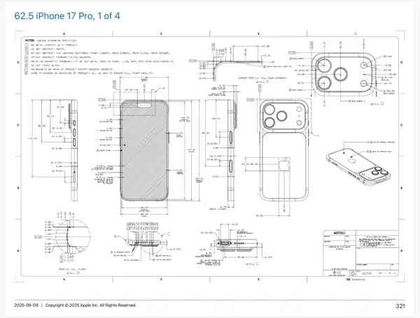

Objets
Vue 3D, sélection, déplacement et manipulation des objets.
G · S · R · TabUne fiche de référence rapide pour comprendre l’interface, les propriétés, les éditeurs et les raccourcis essentiels.
Commencer →Vue 3D, sélection, déplacement et manipulation des objets.
G · S · R · TabTransform, Modifiers, Physics, Animation, Data et Material.
Object → PropertiesUV Editor et Shader Editor pour les textures et matériaux.
UV · ShaderRéglages de Blender et gestion des add-ons.
Edit → PreferencesTransformations et informations générales de l’objet.
Une série d’opérations appliquées à l’objet, de façon non destructive.
Création et réglage des matériaux utilisés par l’objet.
Données propres au type d’objet sélectionné.
Simulation pour certaines situations.
Outils liés aux images clés et à l’animation des propriétés.
Cycles est le moteur de rendu physique de Blender. Le pipeline peut être résumé ainsi : modéliser → matériaux → éclairage → caméra → réglages Cycles → rendu.
Déplier les faces d’un mesh et organiser les UV pour préparer une texture.
Construire les matériaux avec des nœuds : textures, Principled BSDF et sortie matériau.
Fiche pratique pour travailler les arêtes et préparer une modélisation propre à partir d'une référence technique. Les outils ci-dessous servent notamment à découper, supprimer, arrondir et contrôler la géométrie.
Tab → passer en Edit Mode, puis 2 (touche É / é sur clavier AZERTY) pour passer en sélection des arêtes. Sélectionner ensuite toutes les arêtes avec A.
Shift + Tab permet d'activer ou désactiver le snapping dans Blender. Utilise-le lorsque tu veux contrôler précisément l'accrochage pendant les manipulations.
Sélectionner 2 points / sommets, puis utiliser J pour créer une connexion / découpe entre les deux lorsque la topologie le permet.
Sélectionner les arêtes à retirer, puis utiliser Edge → Dissolve Edges. Cela supprime les arêtes sélectionnées sans supprimer la surface comme le ferait une suppression classique.
Ctrl + B lance le Bevel en Edit Mode. Déplacer la souris pour régler la largeur du chanfrein, puis utiliser la molette pour choisir le nombre de segments / angles avant de cliquer pour valider.
Sur l'objet sélectionné Cube.002, le panneau Modifier montre un Boolean réglé sur Difference. Le type d'opérande est Object et l'objet utilisé comme opérande est Cube.006. Le solveur est réglé sur Exact, pour obtenir une opération booléenne plus précise.
Ctrl + R ajoute une Loop Cut sur le mesh. Place le curseur sur la géométrie, prévisualise la coupe, clique pour la placer puis ajuste sa position.
J sert à connecter des sommets, Dissolve Edges permet de simplifier la topologie sans casser les faces, et Ctrl + B permet de créer un chanfrein / arrondi sur les arêtes.Ctrl + R correspond à Loop Cut, pas à « revenir en arrière ». Pour annuler une action, utilise Ctrl + Z. La touche P n'est pas un raccourci universel pour « changer le level » : son action dépend du contexte / outil utilisé.Les Dimensional Drawings d'Apple fournissent des dessins cotés et spécifications techniques utiles comme référence pour un exercice de modélisation.
Planche de référence d'un iPhone 17 Pro : vues orthographiques, détails, cotes et indications techniques. Utilise ce document comme référence pour un exercice de modélisation 3D.

Rotation : 0° · Scale : 1 · Les dimensions dépendent de l’objet.
La molette, le clic molette et les combinaisons avec Shift/Ctrl permettent de naviguer dans la vue.
Add-on utile pour enrichir les outils de modélisation. À activer depuis Preferences → Add-ons.
Edit → Preferences → Network → Allow Online Access, si nécessaire pour les fonctions en ligne.